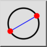
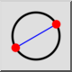
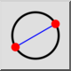
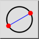

2 Points
Toolbar / Icon:
 

Menu: Draw > Circle > 2 Points
Shortcut: C, 2
Commands: circle2p | c2
Toolbar / Icon:
 

Menu: Draw > Circle > 2 Points
Shortcut: C, 2
Commands: circle2p | c2
Draws a circle with two diametrically opposed points.